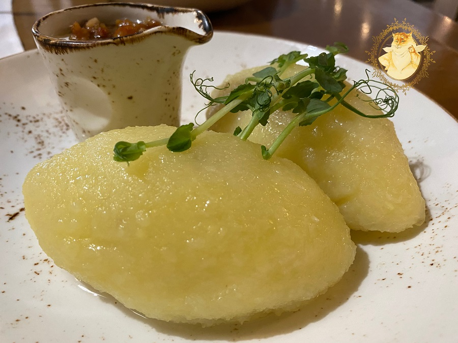

Cepelinai

Description
Cepelinai are traditional Lithuanian dumplings made from a potato dough stuffed with a savory pork filling. They are often served with a creamy sour cream sauce and are a hearty, comforting dish commonly enjoyed during family gatherings and special occasions.
Ingredients
For the Dough:
- 4 large potatoes
- 1 large egg
- 2 tablespoons all-purpose flour
- 1 teaspoon salt.
For the Filling:
- 1/2 pound (250 grams) ground pork
- 1 small onion, finely chopped
- 1 tablespoon vegetable oil
- 1/2 teaspoon salt
- 1/4 teaspoon black pepper.
For the Sauce (Optional):
- 1 cup sour cream
- 1 tablespoon all-purpose flour
- 2 tablespoons vegetable oil
- 1 small onion, finely chopped
Steps
- Prepare the Filling: In a skillet, heat the vegetable oil over medium heat. Add the finely chopped onion and cook until translucent. Add the ground pork to the skillet and cook until browned and fully cooked. Season with salt and black pepper. Set aside to cool.
- Prepare the Dough: Peel and grate the potatoes using a fine grater. Place the grated potatoes into a cheesecloth or clean kitchen towel and squeeze out as much moisture as possible. In a large bowl, combine the grated potatoes, egg, flour, and salt. Mix well to form a dough.
- Assemble the Cepelinai: Take a portion of the potato dough and flatten it in the palm of your hand. Place a spoonful of the pork filling in the center of the dough. Carefully fold the dough around the filling and seal it, shaping it into an oval dumpling. Make sure the edges are well-sealed.
- Cook the Cepelinai: Bring a large pot of salted water to a boil. Carefully drop the dumplings into the boiling water. Reduce the heat and simmer the dumplings for about 30-40 minutes, or until they are cooked through and float to the surface. Remove the dumplings with a slotted spoon and let them drain.
- Prepare the Sauce (Optional): In a skillet, heat the vegetable oil over medium heat. Add the finely chopped onion and cook until translucent. Stir in the flour and cook for a couple of minutes. Gradually add the sour cream, stirring continuously until the sauce is smooth and heated through.
- Serve: Place the cooked Cepelinai on a serving platter. Spoon the sauce over the top, if using. Serve hot and enjoy!